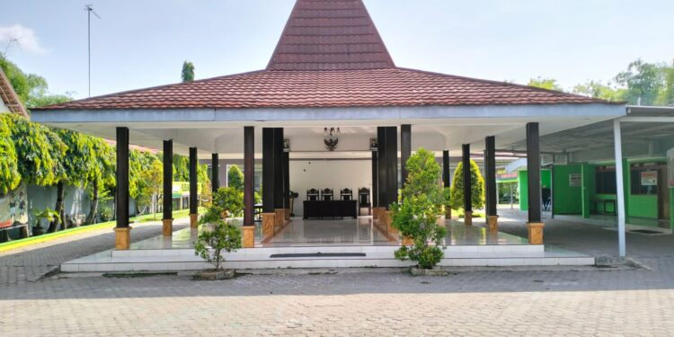
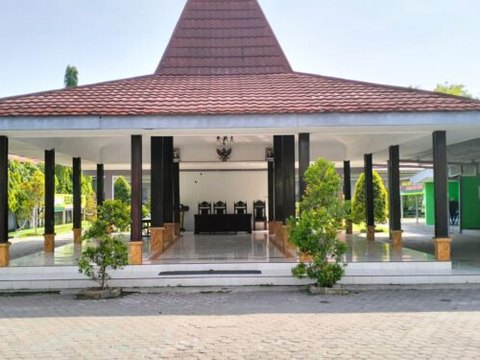
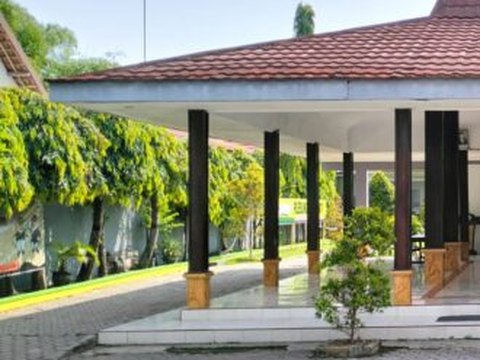
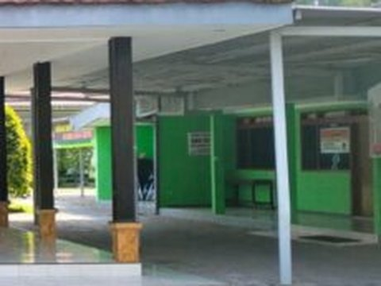
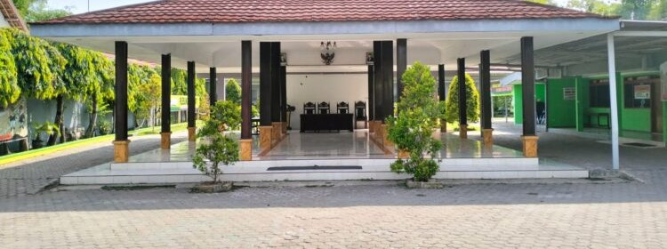

1
Isi Formulir
Tulis judul, isi pengaduan, dan lampirkan foto bukti bila ada.

Sampaikan pengaduan, aspirasi, dan saran Anda kepada Pemerintah Desa Luwung.
Mudah, cepat, dan bisa dipantau kapan saja.
Tulis judul, isi pengaduan, dan lampirkan foto bukti bila ada.
Setelah terkirim, simpan kode tiket untuk melacak pengaduan Anda.
Lihat perkembangan penanganan oleh perangkat desa di menu Cek Status.
Pilih topik untuk langsung membuka formulir pengaduan.
Kecamatan Mundu, Kabupaten Cirebon, Jawa Barat.



